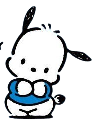

|  | Pochacco (ポチャッコ, Pochakko ) adalah salah satu dari banyak karakter fiksi yang diproduksi oleh Sanrio pada tahun 1989. Ia digambarkan sebagai seekor anjing putih dengan telinga terkulai hitam, tetapi tidak ada mulut yang terlihat. Dia sering mengenakan pakaian atletik, karena dia memiliki kepribadian yang sporty dan menyenangkan. Makanan favoritnya adalah es krim pisang. Sanrio menciptakannya setelah kehilangan hak atas Peanuts , dan mendesainnya setelah Snoopy. Pada tahun-tahun awal hidupnya, Pochacco disebut sebagai "Anjing Yorimichi". Dia menyukai bola basket dan sepak bola, tetapi sekitar pertengahan tahun 1990-an dia mulai bermain skateboard. Meski berjalan tegak, ia masih kesulitan sering tersandung; biasanya mengakibatkan cedera kepala dengan akumulasi perban. Masalah ini rupanya terpecahkan dalam inkarnasinya baru-baru ini, seperti yang terlihat dengan sepeda motor. Pochacco lahir pada tanggal 29 Februari 1989 (Hari Kabisat yang tidak ada, yang terdekat terjadi pada tahun 1988 atau 1992), di Uguisu Yokocho ("Nightingale Lane" dalam bahasa Inggris), dan tinggal di Kota Fuwa Fuwa ("Kota 'Airy' " dalam bahasa Inggris). Namun, Sanrio sering mengubah sejarah karakternya untuk menarik penonton lokal, sehingga ia terkadang dikatakan lahir di Brazil dan/atau tinggal di New York City. |
| Informasi Lebih Lengkap Bisa Kamu Baca Disini!૮₍˶ᵔ ᵕ ᵔ˶₎ა |